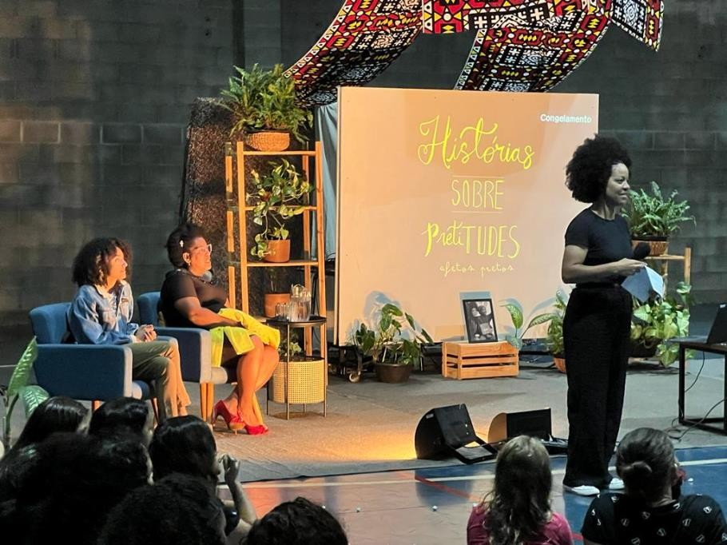

ESCOLA SOCIAL MARISTA IRMÃO ACÁCIO PROMOVE PROJETO PRETITUDES PARA CONSCIENTIZAÇÃO DA COMUNIDADE ESCOLAR
A Escola Social Marista Irmão Acácio, localizada na cidade de Londrina, está desenvolvendo um projeto transformador chamado Pretitudes, com o objetivo de conscientizar as pessoas sobre a importância da valorização e representatividade das pessoas negras na sociedade.
A ideia do projeto surgiu a partir de conversas com os educandos, onde a questão da raça sempre foi um tema trabalhado pela escola. Em 2021, o projeto já estava em andamento, na época chamado de Projeto Ser, e no ano passado, com a conexão, a equipe percebeu a necessidade de melhorar as referências para os educandos. Foi então que surgiu a ideia de realizar uma série de rodas de conversa, que acabaram se transformando em histórias contadas por convidados especiais.
O principal objetivo do projeto é proporcionar referências positivas para os educandos, valorizando a história e a presença do povo negro em diferentes áreas, como arte, ciência, educação, leis, política e esportes. A proposta é que os educandos conheçam sua própria história e se libertem dos estereótipos que os colocam em posições de subserviência.
O projeto Pretitudes tem despertado grande interesse e engajamento por parte da comunidade. A educadora responsável pelo projeto, Aline, se emociona ao ver a quantidade de pessoas interessadas e envolvidas. Ela destaca que o projeto começou pequeno, mas foi crescendo e se transformando ao longo do tempo, envolvendo não apenas os educandos, mas também outros educadores e toda a escola. A participação de todos tem sido fundamental para o sucesso do projeto.
Aline relata que tem recebido feedbacks positivos sobre o impacto do projeto na vida dos educandos e da comunidade educativa. As transformações são visíveis, desde a aceitação dos cabelos até a valorização da própria identidade. Embora o racismo ainda seja uma realidade enfrentada diariamente, o projeto tem contribuído para que os educandos enxerguem as coisas de outra forma e se sintam mais empoderados.
O projeto Pretitudes está em circulação na escola desde julho de 2022, e a intenção é que ele continue acontecendo e se expandindo. Aline ressalta que não há um limite definido para onde o projeto pode chegar, mas acredita que ele deve continuar a inspirar e impactar cada vez mais pessoas. O objetivo é que o projeto seja uma referência constante, independente de quem esteja à frente, pois a demanda por discussões e ações antirracistas é constante.
Com o projeto Pretitudes, a Escola Social Marista Irmão Acácio busca promover a conscientização e valorização das pessoas negras, contribuindo para a construção de uma sociedade mais justa e igualitária.
Data da Publicação: 13 de dezembro de 2023